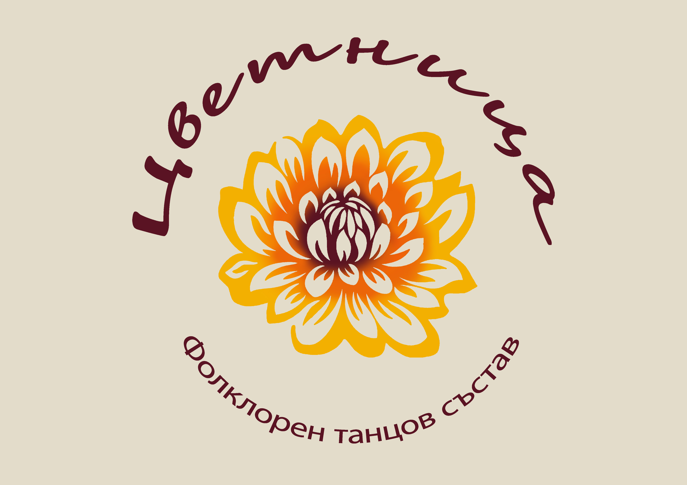

Фолклорен танцов състав
Танцов състав “Цветница”, с художествен ръководител Йоанна Низамска, е създаден от група приятели през лятото на 2023г. Поводът е танцова изненада за сватбеното тържество на близък човек. Това поставя началото на нещо дълго обсъждано, отлагано във времето, но силно желано.
Основната цел на колектива е да представя българския фолклор в неговия обработен вид. С хореографирани движения и танцова постановка, подходящи за сцена, се показва богатството на различните фолклорни области на България.
Като част от Сдружението “За да ни има”, танцьорите имат честта и удоволствието в изявите си да бъдат облечени изцяло в носии от Колекцията "За да ни има".

Репертоарът включва танци от Шопската, Добруджанската и Тракийската фолклорни области. В момента се работи по поставянето на нов танц от Северняшката фолклорна област.
Освен сценични танци, в програмата е включена специално разработена постановка, наречена “Картини от България”. Тя съчетава в себе си представяне на традиционни носии от всяка една фолклорна област и характерните за нея танцови стъпки. Създадена е за представянето на колектива в “Culture and Arts Carnival” - Пекин, Китайска народна република.